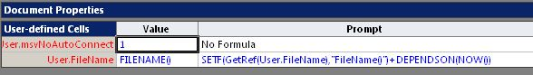

Все началось с вопроса к этой функции. Пользователь заметил, что после ручного переименования файла VSDX функция начинает врать. Открываешь уже новый файл, а в поле, которое ссылается на эту функцию, выдается прежнее значение. Причем в версиях Visio 2007 и ниже баг отсутствовал и проявляется только во всех версиях с новым форматом.
Да, значение можно обновить. Например, если открыть шейп-лист, найти ячейку, использующую функцию, в строке редактирования встать в конце формулы и нажать Enter. Или через SaveAs сохранить файл под новым именем. И в том, и в другом случае поле обновляется, но дя этого нужны ручные действия. А главное - нужно вовремя вспомнить о них, иначе в документе останется ошибка, а это неприятно.
В процессе исследований выяснилось, что попытка перезаписи формулы с FileName() с использованием функции SETF() не помогает. Когда в ячейку пишется та же самая формула, то в ячейке вроде как ничего и не меняется. Значит и обновляться она не собирается.
Следующая мысль - ячейку нужно передернуть. То есть записать в нее сначала одно, потом другое. Уж в этом-то случае она должна обновиться. Причем желательно записывать так, чтобы значение ячейки в процессе не менялось или менялось на очень короткое время, иначе мельтешенее будет раздражать пользователя.
Первым возник вариант с использованием макроса. Например, при открытии документа записать в ячейку просто похожий текст и следом функцию.
Private Sub Document_DocumentOpened (ByVal doc As IVDocument)
ActiveDocument.DocumentSheet.Cells ("User.FileName").FormulaU = """FILENAME )"""
ActiveDocument.DocumentSheet.Cells ("User.FileName").FormulaU = "FILENAME()"
End subЭто работает. Но не всем нравится, потому как документ с макросами - это уже другой уровень безопасности. И в некоторых случаях его просто запрещено снижать. То есть желательно найти решение на основе шейп-листа.
В принципе могла бы помочь функции SETF(), если удастся запустить ее дважды. В качестве задающего генератора можно использовать функцию NOW(). Она выдает значение с точностью до секунды, но обновляется раз в минуту. В итоге получилась примерно такая конструкция:

В секции User документа организована строка User.FileName, которую предлагается использовать для ссылок вместо первичной функции FILENAME(). В секции Scratch документа собран движок для обновления User.FileName. Движок запускается функцией NOW() и взводит флаг Scratch.C1. При взведенном флаге (значение =1) ячейка Scratch.D1 пишет в User.FileName значение имени файла (строку). Но сразу же после этого срабатывает User.Prompt и возвращает 0 в Scratch.C1, после чего Scratch.D1 пишет в User.FileName уже саму функцию FILENAME(). То есть на короткое время функция заменяется на значение и возвращается обратно. Этого достаточно, чтобы в ячейке User.FileName всегда было актуальное имя.
Значения формул:
Scratch.A1=NOW()
Scratch.B1=SETF(GetRef(Scratch.C1),"1")+DEPENDSON(Scratch.A1)
Scratch.C1=0
Scratch.D1=IF(Scratch.C1=0,SETF(GetRef(User.FileName),"FileName()"),SETF(GetRef(User.FileName),GetVal(User.FileName)))+DEPENDSON(Scratch.A1)
User.FileName.Value=FILENAME()
User.FileName.Prompt=SETF(GetRef(Scratch.C1),"0")+DEPENDSON(Scratch.C1)Другие генераторы
В процессе исследований были опробованы и некоторые другие генераторы. Например, в ячейке Scratch.C1 можно сформировать меандр, если использовать такие формулы:
Scratch.A1=NOW()
Scratch.B1=SETF(GetRef(Scratch.C2),BITAND(MINUTE(Scratch.A2),1))
Scratch.C1=0Одну минуту в ячейке будет держаться единица, одну минуту - 0 и так далее.
Можно сгенерировать счетчик минут и пересчитывать, например, время редактирования документа в минутах. Для этого используются такие формулы:
Scratch.A1=NOW()
Scratch.B1=SETF(GetRef(Scratch.C1),GetVal(Scratch.C1)+1)+DEPENDSON(Scratch.A1)
Scratch.C1=0После того, как первичная цель была достигнута, появилась мысль - а хорошо бы развернуть эту последовательность событий во времени. Но об этом наверное лучше в другой статье.
Файл, на котором проводились эксперименты.
Дополнение
Ну вот, когда завершил всю писанину, выяснилось, что конструкция крутая, но явно избыточная :) Все-таки SETF в сочетании с DEPENDSON(NOW()) исправляет ситуацию. Бывает...

В итоге вот такая конструкция тоже признана работоспособной.
Но зато сколько всего попутно поисследовано :)